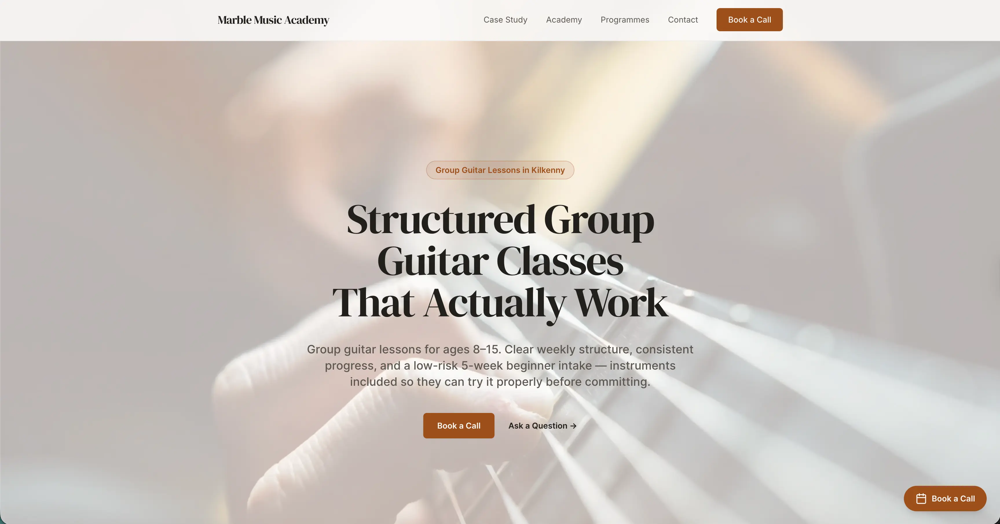
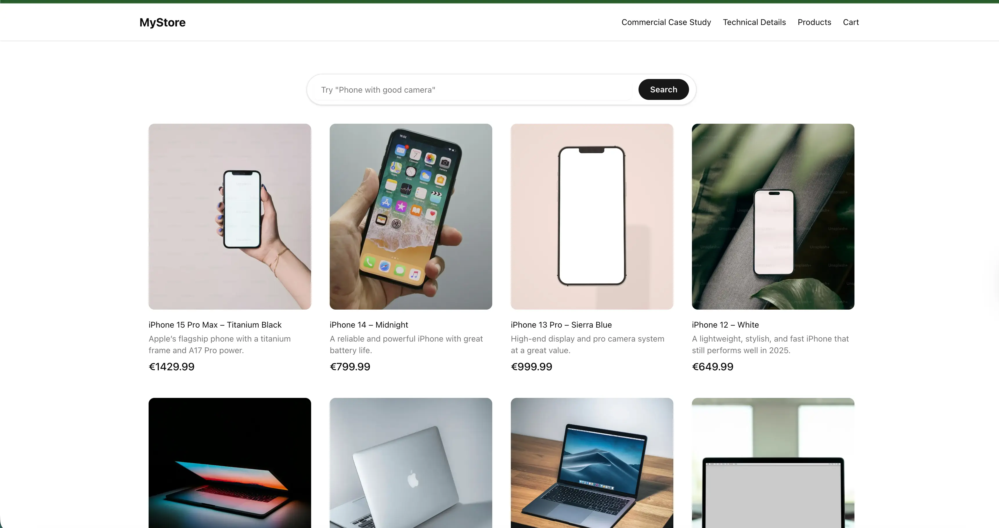

Case Studies & Demos
Real Lead Gen Case Study — Marble Music Academy (2022)
Ran a real lead-gen and closing funnel end-to-end: ads, landing page, qualification calls, follow-up, and close. Includes metrics, scripts, and lessons on pipeline discipline.
- Paid acquisition
- Qualification calls
- Follow-up cadence
- Landing page conversion

AI Product Discovery Demo — Semantic Search and Grounded Q&A (RAG)
Live demo of semantic search + grounded product Q&A to reduce discovery friction and pre-purchase hesitation. Includes KPI framing and buyer objections (trust/cost).
- Semantic search
- Grounded Q&A (RAG)
- Conversion framing
- Objection handling

About Me
I’m targeting Tech Sales (SDR) roles. I use live demos and real case studies to show I can translate technical capability into buyer outcomes (conversion, pipeline, qualification).
First Class Honours in Software Development (Atlantic Technological University) and BA (Hons) First Class Honours in Music (Waterford Institute of Technology). I can speak credibly with engineers and commercially with buyers, backed by running a real acquisition and closing funnel.
Download CV